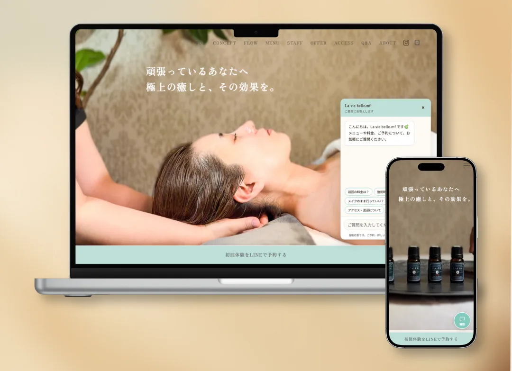
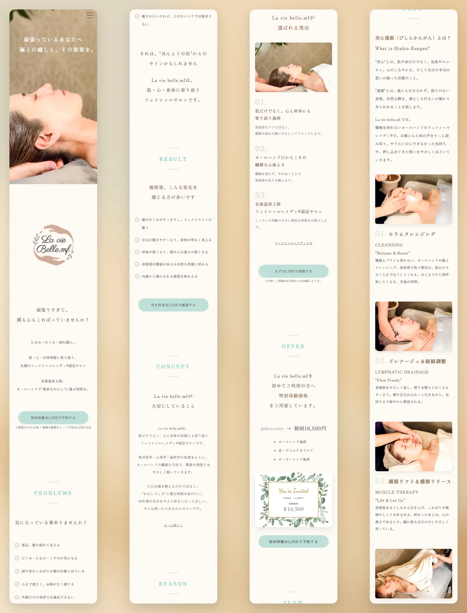

CLIENT WORK / CASE STUDY
La vie belle.mf
Web / LP / Reels / Chatbot

01
OVERVIEW
札幌のフェイシャルレメディ®サロン「La vie belle.mf」の、初回体験の予約につなげるLPを制作しました。ヒアリングから撮影、構成、デザイン、コーディングまでを担当し、LPには予約前の疑問にその場で答えるAIチャットボットを組み込んでいます。料金・施術時間・アクセスなどの疑問を解消して、予約や相談は公式LINEへつなげます。
02
TARGET
LPを見て、初回体験の予約を考えている40代の女性。予約の前に、料金や施術時間、メイクのまま行けるかなどを気軽に確かめたい人を想定しました。
03
DESIGN POINT
LP
- 「共感 → 信頼 → 行動」の流れで構成お悩みへの共感から始めて、サロンの考え方や施術内容で信頼につなげ、最後に予約へ進んでもらう順番で情報を並べました。
- 迷わず予約へ進めるボタン配置予約を考えるタイミングに合わせてページ内に予約ボタンを置き、さらに画面に追従する固定ボタンで、どこまで読んでいてもすぐ予約へ進めるようにしました。
- サロンらしさが伝わる世界観サロンのブランドカラーを使い、自分で撮影した写真と動画で、ターゲットの方に合わせた落ち着いた世界観をつくりました。
チャットボット
- 3段階で確かめながら構築「画面のみ → スプレッドシートを参照するキーワード回答 → AI回答」の順に、段階ごとに動作を確認しながら作りました。
- 書かれた範囲だけで答えるAIはスプレッドシートの情報の範囲だけで答え、書かれていないことや予約・空き状況の確認は公式LINEへ案内します。効果を言い切る回答もしないようにしています。
- 止まらない・使いすぎない通信エラーや利用上限でAIが使えないときは、キーワード回答に自動で切り替わります。APIキーはGoogle Apps Script側だけに置き、1分・1日あたりの利用回数にも上限を設けました。
- 運用しやすく、効果を測れる回答はスプレッドシートを更新するだけで差し替えられます。チャットを開いた回数・質問数・LINEへのクリック数も計測できるようにしました。
04
SCREENS

05
REELS
撮影・構成・編集・投稿まで担当した、サロン紹介のリールです。